20 molécules3 à dessiner23 concepts5 questions du prof
Deux blocs : les amoebicides (nitroimidazolés en tête) et les antimalariques. Le prof relie sans cesse ce chapitre aux antibactériens : triméthoprime/proguanil (DHFR), doxycycline (paludisme), métronidazole (Helicobacter).
gras souligné = comprendrebleu = DCI + nom commercial + classebleu gras souligné = dessinerrouge = très important
20 molécules (3 à dessiner) · afficher :
Antimycosiques et antiprotozoaires7 concepts · 9 molécules (1 à dessiner) · p. 124-147
Concepts à comprendre (7)
Protozoaires, amibes, trichomonas
Organismes unicellulaires eucaryotes (vrai noyau, contrairement aux bactéries procaryotes), avec organites complexes. Certains sont parasites : amibes (Entamoeba histolytica → dysenterie amibienne), trichomonas (Trichomonas vaginalis, flagellé : vaginites, urétrites, parfois cystites ; 20-25 % des femmes en période de fertilité) et plasmodium (malaria).
Pourquoi les antibiotiques antibactériens classiques ne suffisent-ils pas contre les protozoaires ?
Ce sont des eucaryotes avec un vrai noyau et des organites complexes : ils n'ont pas les cibles procaryotes des antibactériens.
Alcaloïdes
Substances d'origine naturelle avec au moins une fonction aminée (secondaire ou tertiaire), le plus souvent hétérocyclique polycyclique. Bases : peu solubles dans l'eau, solubles dans l'alcool et le chloroforme. Sels (halogénhydrate, sulfate, phosphate…) : solubles dans l'eau, insolubles dans les solvants organiques. Ex. : émétine (ipéca).
Pourquoi formule-t-on souvent les alcaloïdes sous forme de sels ?
Parce que les sels sont solubles dans l'eau alors que les bases libres le sont peu.
Amoebicides tissulaires, de contact et mixtes
Tissulaires : suppriment le parasite dans les tissus (émétine, déhydroémétine, chloroquine). De contact : actifs dans l'intestin (oxyquinoléines halogénées). Mixtes : actifs par contact et de manière systémique (nitroimidazolés : métronidazole, nimorazole, ornidazole, tinidazole).
Pourquoi le métronidazole est-il un amoebicide « mixte » ?
Parce qu'il agit à la fois dans l'intestin (contact) et dans les tissus (systémique), ex. amibiase intestinale et hépatique.
Mécanisme des nitroimidazolés
Les bactéries anaérobies et parasites sensibles possèdent un équipement enzymatique qui transforme les nitroimidazoles en dérivés réduits toxiques altérant l'ADN (brins dissociés). Ils réduisent le NO2 bien plus vite que les cellules de l'hôte. Mode d'action identique aux nitrofurannes.
Pourquoi le métronidazole est-il actif sur les anaérobies et peu toxique pour nos cellules ?
Parce que ce sont les germes (anaérobies, parasites) qui réduisent rapidement le groupe NO2 en métabolites toxiques pour l'ADN ; nos cellules le font beaucoup plus lentement.
Éradication d'Helicobacter pylori
Traitement combiné de 10 jours (CBIP) : IPP (oméprazole 40 mg ×2/j) + amoxicilline (2 g/j en 2 prises) + clarithromycine (1 g/j en 2 prises) + métronidazole (1 g/j en 2 prises). Alternative : IPP + bismuth (1680 mg/j) + tétracycline (1500 mg/j) + métronidazole (1500 mg/j), en 4 prises.
Pourquoi associe-t-on un IPP aux antibiotiques ?
Le cours décrit l'éradication comme l'association du métronidazole avec un antibiotique et un inhibiteur de la sécrétion acide gastrique : l'IPP fait partie intégrante du schéma.
Trypanosomiases africaine et américaine
Africaine = maladie du sommeil, trypanosome transmis par la mouche tsé-tsé. Américaine = maladie de Chagas (Trypanosoma cruzi), transmise par des punaises hématophages en Amérique du Sud et centrale. En Belgique, la pentamidine (PENTACARINAT®, IM) est active contre le trypanosome.
Pourquoi la pentamidine est-elle vendue en Belgique alors que ces maladies sont tropicales ?
Elle est aussi utilisée contre la pneumonie à Pneumocystis carinii (prévention en aérosol, traitement) chez les patients SIDA en cas de résistance/CI au co-trimoxazole.
Pentamidine : inhibition de la synthèse de l'ARN et des protéines
La pentamidine interfère avec la transformation de l'ADN et du folate et inhibe la synthèse de l'ARN et des protéines.
Pourquoi la pentamidine est-elle antiprotozoaire ?
Elle perturbe l'ADN/folate du parasite et bloque la synthèse de son ARN et de ses protéines.
Amoebicides 1 molécule
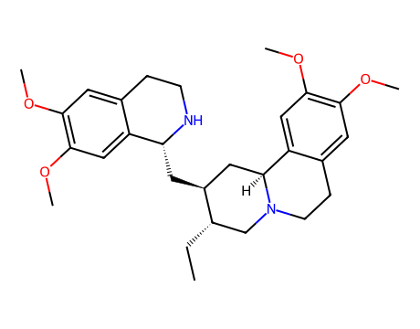
Émétineà reconnaître
pas de nom commercial au cours
Amoebicides — Amoebicides tissulaires (alcaloïdes de l'ipéca)
Noyau : 2-Méthyl-5-nitroimidazole N1-substitué par un 2-hydroxyéthyle
Mécanisme : Les bactéries anaérobies et parasites sensibles réduisent le groupe NO2 en dérivés réduits toxiques qui altèrent l'ADN (brins dissociés) ; réduction bien plus rapide que dans les cellules de l'hôte. Mode d'action identique à celui des nitrofurannes (p.142).
Indications : Infections à anaérobies non sporulés, surtout Bacteroides fragilis (p.143), Urétrites et vaginites à Trichomonas vaginalis, Amibiase intestinale et hépatique, Giardiase intestinale (lambliase)
Structure-activité
Imidazole avec NO2 en 5, CH3 en 2 et CH2CH2OH sur N1. L'ornidazole a CH2-CH(OH)-CH2Cl, le tinidazole CH2CH2-SO2-Et, le nimorazole une morpholinoéthyle (sans CH3).
Noyau : 2-Méthyl-5-nitroimidazole N1-substitué par CH2-CH(OH)-CH2Cl
Mécanisme : Les bactéries anaérobies et parasites sensibles réduisent le groupe NO2 en dérivés réduits toxiques qui altèrent l'ADN (brins dissociés) ; réduction bien plus rapide que dans les cellules de l'hôte. Mode d'action identique à celui des nitrofurannes (p.142).
Structure-activité
Comme le métronidazole mais chaîne 3-chloro-2-hydroxypropyle ; caractéristiques physicochimiques semblables (p.144).
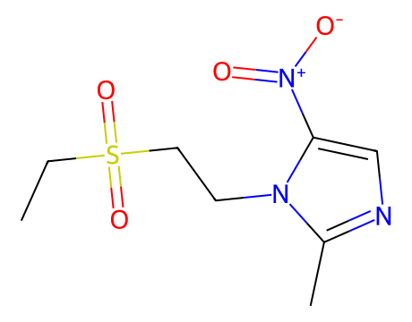
Tinidazoleà reconnaître
pas de nom commercial au cours
Nitroimidazolés — Amoebicides mixtes
Noyau : 2-Méthyl-5-nitroimidazole N1-substitué par CH2CH2-SO2-C2H5
Mécanisme : Les bactéries anaérobies et parasites sensibles réduisent le groupe NO2 en dérivés réduits toxiques qui altèrent l'ADN (brins dissociés) ; réduction bien plus rapide que dans les cellules de l'hôte. Mode d'action identique à celui des nitrofurannes (p.142).
Structure-activité
Nom en gras noir (pas en bleu) mais structure dessinée p.144 : chaîne éthylsulfonyléthyle.
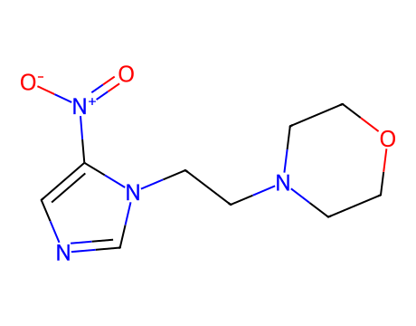
Nimorazoleà reconnaître
pas de nom commercial au cours
Nitroimidazolés — Amoebicides mixtes
Noyau : 5-Nitroimidazole (sans méthyle en 2) N1-substitué par un 2-morpholinoéthyle
Mécanisme : Les bactéries anaérobies et parasites sensibles réduisent le groupe NO2 en dérivés réduits toxiques qui altèrent l'ADN (brins dissociés) ; réduction bien plus rapide que dans les cellules de l'hôte. Mode d'action identique à celui des nitrofurannes (p.142).
Structure-activité
Nom en gras noir (pas en bleu) mais structure dessinée p.144 : seul nitroimidazolé du cours sans CH3 en 2, avec une morpholine.
Nitro-hétérocycles (même activité que les nitroimidazolés) 1 molécule
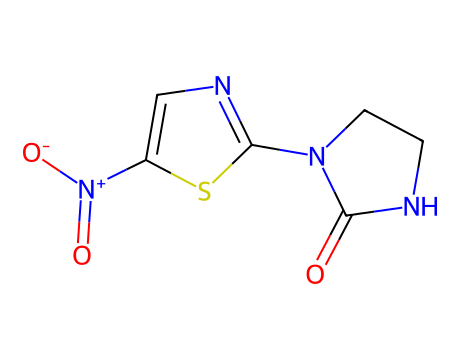
Niridazoleà reconnaître
pas de nom commercial au cours
Nitro-hétérocycles (même activité que les nitroimidazolés) — Antiparasitaire (bilharzioses, dracunculoses)
Noyau : 5-Nitrothiazole lié à une imidazolidin-2-one
Mécanisme : Même activité que les nitroimidazolés (p.144).
Indications : Bilharzioses (schistosomoses) et dracunculoses (ver de Guinée) (p.144)
Structure-activité
Pas un imidazole aromatique : nitroTHIAZOLE (contient S) + imidazolidinone (urée cyclique).
Anthelminthiques 1 molécule
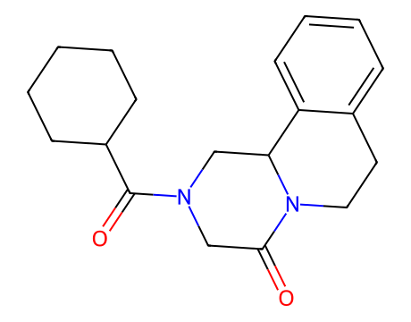
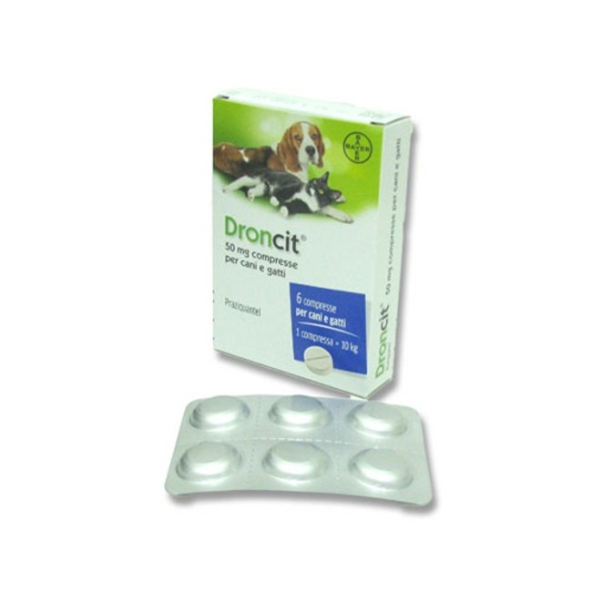
DRONCIT® (usage vétérinaire en Belgique)
Praziquantelà reconnaître
DRONCIT® (usage vétérinaire en Belgique)
Anthelminthiques — Actif contre les trématodes
Noyau : Pyrazino[2,1-a]isoquinoléin-4-one N-acylée par un cyclohexanecarbonyle
Mécanisme : Mode d'action pas totalement identifié : augmente la perméabilité des membranes des parasites (certains schistosomes) aux ions calcium → contraction puis paralysie en phase de contraction (p.144).
Tricycle pyrazino-isoquinoléinone + cyclohexylcarbonyle. Attention : la structure p.145 du syllabus montre un Cl sur le benzène, absent de la molécule réelle de praziquantel (C19H24N2O2) – à vérifier avec le professeur.
Mécanisme : Interfère avec la transformation de l'ADN et du folate et inhibe la synthèse de l'ARN et des protéines (p.146).
Indications : Trypanosomiase (injection IM) (p.146), Pneumonie à Pneumocystis carinii : prévention (en aérosol) et traitement, en cas de résistance ou CI au co-trimoxazole, notamment chez les patients atteints du SIDA (p.146)
Structure-activité
Molécule symétrique : 2 groupements amidine C(=NH)NH2 en para, pont pentaméthylène dioxy (PENTA = 5 CH2).
Antiprotozoaires (naphtoquinone) — Analogue de l'ubiquinone
Noyau : 2-Hydroxy-1,4-naphtoquinone substituée par un trans-4-(4-chlorophényl)cyclohexyle
Mécanisme : Inhibe le transfert des électrons au niveau du complexe III de la chaîne respiratoire des parasites (p.147).
Indications : Traitement de la pneumonie à Pneumocystis carinii en cas de résistance ou CI au co-trimoxazole (SIDA) (p.146), Prévention et traitement du paludisme en association au proguanil (MALARONE®) (p.146-147), Infections à Toxoplasma gondii (p.147), Chimioprophylaxie et traitement du paludisme avec le proguanil (p.153, p.155, p.157)
Structure-activité
Analogie structurale avec l'ubiquinone (quinone) (p.147) ; cyclohexyle trans.
ATOVAQUONE ≈ ubiQUINONE : bloque le complexe III.
Antimalariques, anthelminthiques, antiseptiques intestinaux, désinfectants et antiseptiques de contact16 concepts · 11 molécules (2 à dessiner) · p. 148-175
Concepts à comprendre (16)
Paludisme (malaria)
Parasitose due à un protozoaire (Plasmodium, surtout P. falciparum et P. vivax, plus rarement P. ovale et P. malariae) transmis par la piqûre de la femelle de l'anophèle, provoquant des fièvres intermittentes. Maladie parasitaire la plus répandue, plus d'un million de morts par an (surtout en Afrique) ; première cause de mortalité des enfants de moins de 5 ans en Afrique.
Pourquoi les femmes enceintes en zone endémique sont-elles particulièrement touchées ?
Parce qu'elles développent un nouvel organe, le placenta, où les parasites (P. falciparum) peuvent s'accumuler.
Cycle asexué chez l'homme
Le moustique injecte des sporozoïtes qui gagnent le foie en ~30 min et s'y multiplient 10 à 15 jours. Libérés sous forme de mérozoïtes, ils infectent les globules rouges, se nourrissent d'hémoglobine et les font éclater de façon brutale et synchrone : ce sont les accès de fièvre. 48 h pour P. vivax et P. falciparum (fièvre tierce), 72 h pour P. malariae (fièvre quarte).
Pourquoi P. vivax et P. malariae peuvent-ils donner des rechutes à longue échéance ?
Parce que la phase hépatique permet au parasite de survivre longtemps dans l'organisme alors qu'il a disparu du sang.
Anémie et paludisme cérébral
La destruction des hématies provoque une anémie ; dans le paludisme cérébral, la mort survient par obstruction des vaisseaux sanguins du cerveau par les globules rouges infectés.
Pourquoi le paludisme provoque-t-il une anémie ?
Parce que les mérozoïtes font éclater les globules rouges qu'ils parasitent.
Cycle sexué chez l'anophèle
Après quelques cycles asexués apparaissent des gamétocytes (mâles et femelles) dans le sang périphérique ; ils ne survivent qu'une vingtaine de jours chez l'homme. Ingérés par un anophèle sain, ils deviennent des gamètes ; la fécondation donne un zygote, puis un oocyste dans le tube digestif du moustique, qui produit des sporozoïtes migrant vers les glandes salivaires.
Pourquoi un anophèle « sain » devient-il infectant après avoir piqué un malade ?
Parce qu'il ingère les gamétocytes, dont la reproduction sexuée dans son tube digestif produit des sporozoïtes qui gagnent ses glandes salivaires.
Formes érythrocytaires vs exoérythrocytaires (hypnozoïtes)
Les formes érythrocytaires sont responsables de l'accès fébrile et de l'anémie. Les formes exoérythrocytaires (hépatiques) sont responsables des rechutes à long terme quand les schizontes de P. ovale et P. vivax (hypnozoïtes) restent en latence dans les hépatocytes. La difficulté du traitement réside dans l'éradication de cette forme hépatique latente.
Pourquoi le traitement de la malaria est-il difficile ?
Parce qu'il faut éradiquer la forme exoérythrocytaire (hépatique) en latence, les hypnozoïtes de P. vivax et P. ovale.
Altération de la transformation de l'hème
Dans la vacuole digestive du parasite, l'hème (produit de dégradation de l'hémoglobine, toxique pour le parasite) est transformé en hémozoïne non toxique (pigment du Plasmodium). La luméfantrine et l'artéméther semblent altérer cette transformation : la luméfantrine interfère avec la polymérisation, l'artéméther produit des métabolites réactifs par interaction de son pont peroxyde avec le fer de l'hème.
Pourquoi empêcher la formation d'hémozoïne tue-t-il le parasite ?
Parce que l'hème libre, issu de la digestion de l'hémoglobine, est toxique pour le parasite ; l'hémozoïne est sa forme détoxifiée.
Le proguanil est une prodrogue
Le proguanil (biguanide) n'est pas actif tel quel : c'est sa forme triazinique, résultant d'une cyclisation par déshydrogénation, qui est active. La pyriméthamine est un analogue de cette forme active.
Pourquoi dit-on que la pyriméthamine est un analogue du proguanil actif ?
Parce qu'elle ressemble à la forme triazinique cyclisée du proguanil, avec un azote en moins et un C2H5 à la place du fragment diméthyle.
Inhibiteurs de la dihydrofolate réductase (proguanil, pyriméthamine)
Le proguanil et la pyriméthamine sont des inhibiteurs de la dihydrofolate réductase plus actifs chez le parasite que chez l'homme ; ils ont donc le même mode d'action que le triméthoprime et bloquent la synthèse des folates (acides nucléiques).
Pourquoi ces antifoliques peuvent-ils être utilisés chez l'homme sans bloquer ses propres folates ?
Parce qu'ils inhibent beaucoup plus la DHFR du parasite que celle de l'homme (toxicité sélective).
Pont peroxyde de l'artémisinine
L'artémisinine et ses dérivés exercent leur effet grâce à leur pont peroxyde intramoléculaire qui, en présence de fer, donne des radicaux libres qui détruisent le parasite intraérythrocytaire. Les chélateurs du fer qui pénètrent dans les cellules inhibent cet effet.
Pourquoi un chélateur du fer diminue-t-il l'efficacité de l'artémisinine ?
Parce que c'est le fer (de l'hème) qui active le pont peroxyde en radicaux libres ; sans fer disponible, pas de radicaux.
Toxoplasmose
La pyriméthamine n'a plus de place dans la malaria, mais associée à un sulfamidé elle est encore utilisée dans le traitement de la toxoplasmose symptomatique en dehors de la grossesse.
Pourquoi associer pyriméthamine et sulfamidé ?
Parce que les deux agissent sur la voie des folates à deux niveaux différents (sulfamidé en amont, DHFR pour la pyriméthamine), comme le couple sulfaméthoxazole-triméthoprime.
Prévention du contact avec les anophèles
La prévention consiste d'abord à réduire ou supprimer le contact avec les anophèles (moustiquaire, répulsif). Les anophèles ne piquent qu'entre le coucher et le lever du soleil.
Pourquoi insister sur la moustiquaire la nuit ?
Parce que les anophèles ne piquent qu'entre le coucher et le lever du soleil.
Chimioprophylaxie antipaludique
On utilise la méfloquine, la doxycycline et l'association atovaquone + proguanil. La méfloquine est de moins en moins utilisée (effets indésirables potentiellement graves) et la (hydroxy)chloroquine n'a qu'une place très limitée (résistances). Durées CBIP : atovaquone/proguanil du jour précédant l'arrivée à 1 semaine après le retour ; doxycycline du jour précédant l'arrivée à 4 semaines après ; méfloquine de 2-4 semaines avant à 4 semaines après.
Pourquoi la méfloquine se commence-t-elle bien avant le départ ?
Pour détecter avant le voyage d'éventuels troubles psychiques (insomnie, cauchemars, anxiété, hallucinations).
Traitement du paludisme
Pour le traitement, on peut utiliser les associations artéméther + luméfantrine ou atovaquone + proguanil, ou la quinine (jamais en monothérapie). La méfloquine n'est utilisée qu'en l'absence d'autres options (effets indésirables fréquents et résistance croissante de P. falciparum). La combinaison de molécules (ACT : dérivé d'artémisinine + luméfantrine) limite les résistances.
Pourquoi associe-t-on systématiquement deux antipaludiques en traitement ?
Pour limiter l'apparition de résistances (cf. ACT).
Vaccin Mosquirix® (RTS,S/AS01)
Le vaccin cible le sporozoïte (antigène circumsporozoïte) et est indiqué pour prévenir le paludisme à P. falciparum chez l'enfant en zone endémique ; son efficacité est modeste, mais il réduit la morbidité.
Pourquoi le vaccin ne remplace-t-il pas la chimioprophylaxie ?
Parce que son efficacité reste limitée (modeste), même s'il diminue la morbidité.
Primaquine et hypnozoïtes
La primaquine (non reprise dans la liste du cours, citée dans la figure) est active sur les hypnozoïtes de P. vivax et P. ovale et évite les rechutes.
Pourquoi un médicament actif sur les hypnozoïtes est-il nécessaire pour P. vivax ?
Parce que les hypnozoïtes en latence dans le foie causent les rechutes à long terme.
Hexamidine, propamidine, pentamidine
Ces diamidines diffèrent par le nombre de groupements méthylènes entre les deux O : hexamidine 6, propamidine 3, pentamidine 5. L'hexamidine est présentée en iséthionate (acide β-hydroxyéthanesulfonique).
Comment retrouver le nombre de CH2 de chaque amidine ?
Par le préfixe : HEXA = 6, PENTA = 5, PROPA = 3.
Quinoléines antimalariques 6 molécules · 2 à dessiner
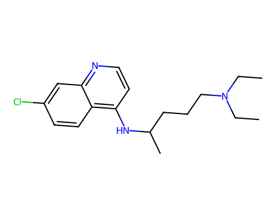
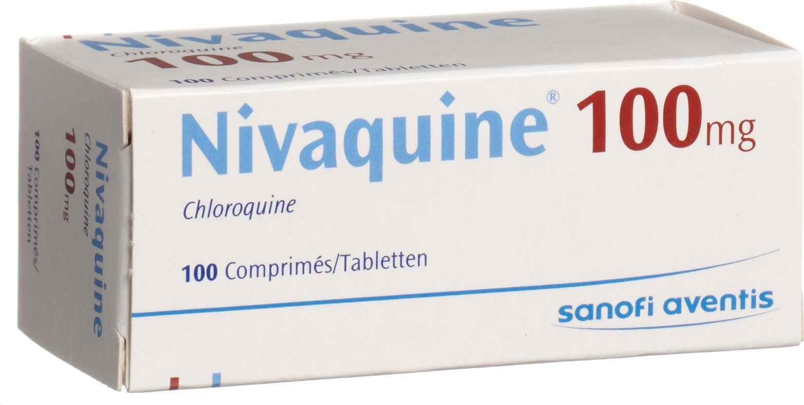
NIVAQUINE® (anc.)
Chloroquineà dessiner
NIVAQUINE® (anc.)
Quinoléines antimalariques — 4-Aminoquinoléine de synthèse (aussi amoebicide tissulaire)
Noyau : 7-Chloroquinoléine substituée en 4 par NH–CH(CH3)–(CH2)3–N(C2H5)2
Mécanisme : Schizonticide sanguin : comme les autres quinoléines, inhibe la polymérisation de l'hème en hémozoïne → accumulation d'hème toxique dans le parasite (figure p.157). Également amoebicide (p.142).
Indications : Prophylaxie de la malaria à P. vivax, P. ovale, P. malariae (p.152), Amoebicide tissulaire (p.152), Lupus érythémateux disséminé et certaines affections inflammatoires (p.152), Amibiase (amoebicide) (p.142)
Structure-activité
Antipaludique de synthèse chimiquement apparenté à la quinine (p.151) : quinoléine avec Cl en 7 et chaîne aminée en 4 terminée par une diéthylamine.
CHLOROquine : CHLORE en 7 ; elle a perdu la bataille contre falciparum.
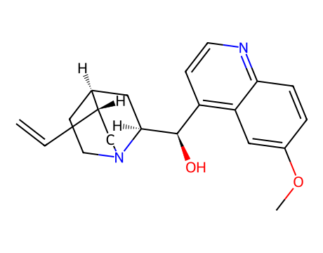
Quinineà dessiner
pas de nom commercial au cours
Quinoléines antimalariques — Alcaloïde du quinquina (quinoléine-méthanol + quinuclidine)
Noyau : 6-Méthoxyquinoléine reliée en 4 par un CH(OH) à une quinuclidine portant un vinyle
Mécanisme : Schizonticide sanguin ; classée parmi les quinoléines qui inhibent la polymérisation de l'hème en hémozoïne → accumulation d'hème toxique dans le parasite (figure p.157).
Indications : Malaria résistante (p.151), Traitement du paludisme, jamais en monothérapie (p.157), Crampes nocturnes des jambes (p.151)
Structure-activité
Premier antimalarique : isolée de l'écorce de quinquina (Pelletier, 1820). Lévogyre ; sa solution aqueuse d'un sel oxygéné fluoresce en bleu. Diastéréoisomère de la quinidine (dextrogyre) : configuration inversée au CH(OH) et au carbone voisin de la quinuclidine ; contrairement à la quinidine, la quinine ne précipite pas avec KI (p.150-151).
QuiNINE : lévogyre, pas de précipité avec KI ; quiniDINE : Dextrogyre, antiarythmique.
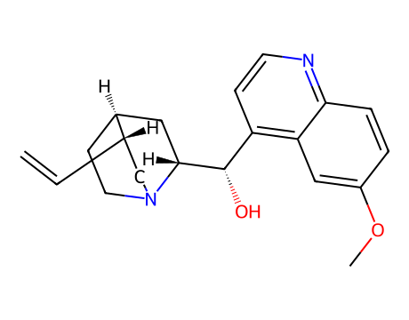
Quinidineà reconnaître
pas de nom commercial au cours
Quinoléines antimalariques — Diastéréoisomère dextrogyre de la quinine (antiarythmique)
Noyau : Même squelette que la quinine (6-méthoxyquinoléine + CH(OH) + quinuclidine vinylée)
Indications : Agent antiarythmique (p.151)
Structure-activité
Diastéréoisomère dextrogyre de la quinine ; précipite avec KI (la quinine non) (p.151).
quiniDINE = Dextrogyre, cœur (antiarythmique).
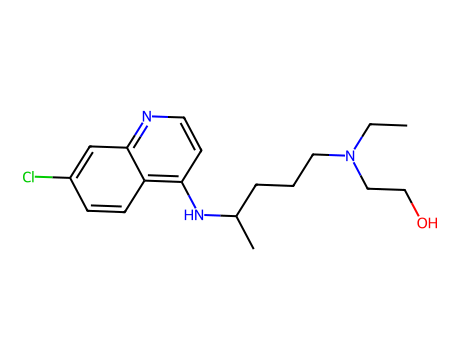
Hydroxychloroquineà reconnaître
pas de nom commercial au cours
Quinoléines antimalariques — 4-Aminoquinoléine apparentée à la chloroquine
Noyau : Chloroquine dont un éthyle de l'amine terminale porte un OH (N-hydroxyéthyl)
Indications : Peut remplacer la chloroquine (indication non mentionnée dans le RCP) (p.151), Lupus érythémateux disséminé et certaines affections inflammatoires (p.151), Produit « repositionné » testé dans le traitement du COVID-19 mais non recommandé à ce jour dans cette indication (résultats contradictoires en prévention comme en traitement) (p.189)
Structure-activité
Apparentée à la chloroquine (structure non dessinée dans le cours) (p.151).
Noyau : Quinoléine portant 2 CF3 (en 2 et 8) et, en 4, un carbone relié à une pipéridin-2-yle
Mécanisme : Quinoléine : inhibition de la polymérisation de l'hème en hémozoïne (figure p.157).
Indications : Traitement des cas résistant à la chloroquine (p.152), Prophylaxie dans les régions à forte résistance à la chloroquine et aux autres antipaludéens (p.152), Traitement du paludisme seulement en l'absence d'autres options (p.157)
Structure-activité
Deux groupes CF3 sur la quinoléine + pipéridine. Attention : le dessin p.152 montre sur le carbone central un trait sans « OH » ; la molécule réelle (C17H16F6N2O) porte un OH sur ce carbone (CH(OH)) – à vérifier avec le professeur.
méFLUOROquine : 2 CF3 ; LARIAM® → cauchemars, à tester 2-4 semaines avant le départ.
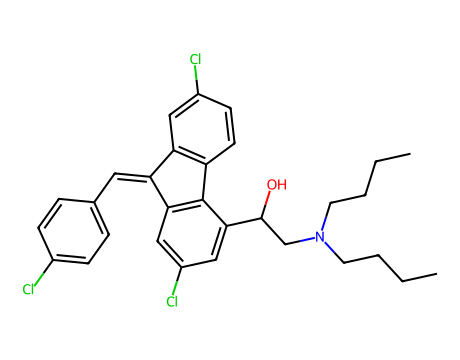
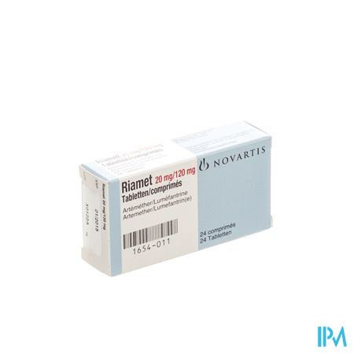
RIAMET® (+ artéméther)
Luméfantrineà reconnaître
RIAMET® (+ artéméther)
Quinoléines antimalariques — Aryl-amino-alcool dérivé du fluorène (rangée avec les quinoléines dans la figure p.157)
Noyau : 2,7-Dichlorofluorène 9-(4-chlorobenzylidène) (Z) portant en 4 un CH(OH)–CH2–N(n-butyl)2
Mécanisme : Agit dans la vacuole digestive du parasite : semble altérer la transformation de l'hème (produit de dégradation de l'hémoglobine, toxique pour le parasite) en hémozoïne non toxique ; interfère avec le processus de polymérisation. Action secondaire : blocage de la synthèse d'acides nucléiques et de protéines du parasite (p.153).
Indications : Traitement du paludisme à P. falciparum non compliqué chez l'enfant et l'adulte, en association fixe avec l'artéméther (p.153, p.157)
Structure-activité
Trois Cl, double liaison exocyclique (Z) en 9 du fluorène, amino-alcool dibutylé ; 1 carbone asymétrique (*).
LUMÉfantrine = 6 parts pour 1 d'artéméther (120/20) : RIAMET®.
Dérivés de l'artémisinine 3 molécules
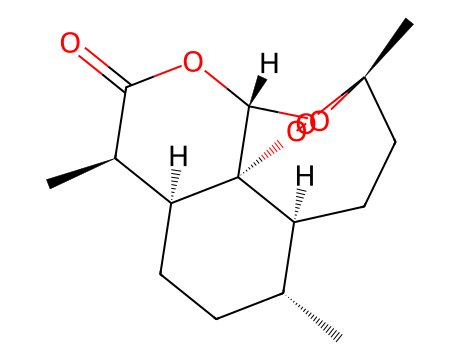
Artémisinineà reconnaître
pas de nom commercial au cours
Dérivés de l'artémisinine — Lactone sesquiterpénique à pont endoperoxyde (Artemisia annua)
Noyau : Sesquiterpène lactone tétracyclique avec pont peroxyde intramoléculaire (1,2,4-trioxane)
Mécanisme : Pont peroxyde intramoléculaire qui, en présence de fer, donne des radicaux libres qui détruisent le parasite intraérythrocytaire ; les chélateurs du fer qui pénètrent dans les cellules inhibent son effet (p.154).
Le pont peroxyde (–O–O–) est indispensable à l'activité. Dérivés hémisynthétiques : réduction de la lactone en lactol (dihydroartémisinine, R = H), puis méthylation (artéméther), éthylation (artééther) ou sel sodique de l'acide succinique (artésunate) (p.154-155).
Artémisinine : le peroxyde + le fer = radicaux libres qui tuent.
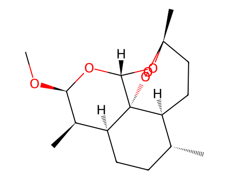
RIAMET® (+ luméfantrine)
Artémétherà reconnaître
RIAMET® (+ luméfantrine)
Dérivés de l'artémisinine — Dérivé hémisynthétique méthylé (R = CH3)
Noyau : Dihydroartémisinine (lactol) O-méthylée ; pont peroxyde conservé
Mécanisme : Produit des métabolites réactifs à la suite de l'interaction entre le pont peroxyde et le fer de l'hème ; altère la transformation de l'hème en hémozoïne ; action secondaire sur la synthèse des acides nucléiques et des protéines (p.153-154).
Indications : Paludisme à P. falciparum non compliqué (enfant et adulte), en association fixe avec la luméfantrine (p.153, p.157)
Structure-activité
Obtenu par méthylation (R = CH3) du lactol de l'artémisinine ; garde le pont peroxyde (p.154-155).
Noyau : Dihydroartémisinine estérifiée par l'acide succinique (forme acide ; utilisé en sel sodique)
Mécanisme : Pont peroxyde + fer → radicaux libres (p.154).
Structure-activité
Fixation d'un sel sodique de l'acide succinique sur le lactol (p.154). Le dessin p.155 représente R comme une chaîne –(CH2)4–COO⁻Na⁺ ; la molécule réelle est un hémisuccinate –O–CO–CH2–CH2–COO⁻ (SMILES donné sous forme acide).
Mécanisme : Inhibiteur de la dihydrofolate réductase, plus actif chez le parasite que chez l'homme : même mode d'action que le triméthoprime (p.154) ; blocage de la synthèse des folates (acides nucléiques) (figure p.157).
Indications : Chimioprophylaxie du paludisme en association avec l'atovaquone, partout, même dans les régions de résistance à la chloroquine ou à la méfloquine (p.153, p.155), Traitement du paludisme (atovaquone + proguanil) (p.157)
Structure-activité
Prodrogue : c'est la forme triazinique, résultant de la cyclisation par déshydrogénation, qui est active (p.153).
PROguanil = PROdrogue (cyclisation en triazine) ; MALARONE® = A + P, 1 j avant → 1 semaine après.
Noyau : 2,4-Diaminopyrimidine portant en 5 un 4-chlorophényle et en 6 un éthyle
Mécanisme : Inhibiteur de la dihydrofolate réductase plus actif chez le parasite que chez l'homme ; même mode d'action que le triméthoprime (p.154).
Indications : Toxoplasmose symptomatique en dehors de la grossesse, associée à un sulfamidé (p.154)
Structure-activité
Analogue de la forme active (triazinique) du proguanil : un azote en moins et un C2H5 à la place du fragment diméthyle (p.154).
PYRIMéthamine = PYRIMidine ; DARAPRIM® + sulfamidé pour la toxo.
Ce que le prof a dit en cours
Nitrofuranes et nitroimidazolés ont le même mécanisme (réduction du groupe nitro -> espèces réactives -> ADN) : « ça peut être une question d'examen ».
Le nitro sur le noyau imidazole est important : structure du métronidazole à retenir.
Proguanil = pro-drogue qui se cyclise en une structure très proche du triméthoprime : inhibiteur de la DHFR du plasmodium.
Doxycycline : retenir ses autres indications (paludisme, Lyme).
Artémisinine : de la plante Artemisia annua (fleur, feuilles en tisane) ; pont endoperoxyde.
Pentamidine : injectable ; retenir son mécanisme.
Les questions posées par le prof
Relevées dans tes enregistrements du cours (et ta base Notion « Questions d'Examen »). Le prof : « vous pourrez avoir toutes mes questions d'examen, je vais vous les donner au fur et à mesure ». Les questions marquées « reformulée » reprennent un point que le prof a expliqué en détail ce jour-là, transformé en question. Réponds d'abord sur papier, puis ouvre la réponse pour te corriger.
23/10/2025Parlez-moi du mécanisme d'action des dérivés nitrofuranes ou nitroimidazolés ; donnez des exemples et des indications particulières. Voir la réponse
Groupe NO2 réduit dans les micro-organismes anaérobies -> intermédiaires radicalaires qui lèsent l'ADN. Nitrofuranes : nitrofurantoïne (FURADANTINE®, infections urinaires), nifuroxazide. Nitroimidazolés : métronidazole (FLAGYL®) : amibiase, trichomonase, vaginites, anaérobies, Helicobacter pylori ; effet antabuse avec l'alcool.
23/10/2025Dans l'éradication d'Helicobacter pylori, on utilise une trithérapie : quels sont les trois produits ? Parlez-moi de leur mécanisme d'action. Voir la réponse
Amoxicilline (paroi, transpeptidases), clarithromycine (ribosome 50S ; HELICLAR®, BICLAR®), métronidazole (réduction du nitro, ADN), avec un inhibiteur de la pompe à protons.
23/10/2025Le triméthoprime est-il un sulfamidé antibactérien ? Pourquoi a-t-il des propriétés antibactériennes avec le sulfaméthoxazole ? (repris avec le proguanil) Voir la réponse
Non, pas de fonction sulfonamide. Il inhibe la DHFR, en aval de la DHPS inhibée par le sulfamidé : double blocage de la voie des folates. Le proguanil (cyclisé en cycloguanil) a une structure proche et inhibe la DHFR du plasmodium.
23/10/2025Rappelez les deux autres indications de la doxycycline. Voir la réponse
Paludisme (chimioprophylaxie) et maladie de Lyme (en plus de son usage antibactérien et dans l'acné).
20/11/2025Question ouverte possible sur les antimalariques. Voir la réponse
Examen écrit, 1 h 30 — 10 pages dont 1 de brouillon. Entraîne-toi dans les conditions : réponds sur papier, puis ouvre le corrigé.
Partie 1 — Questions ouvertes (environ 2 pages chacune)
Question 1. Parlez-moi des antimalariques.
Le plan attendu (sous-questions)
Le paludisme
Quinoléines
Dérivés de l'artémisinine
Antifoliques
Autres
Prévention
Corrigé détaillé
Le paludisme
Plasmodium transmis par l'anophèle femelle ; cycle asexué chez l'homme (foie puis érythrocytes : anémie, paludisme cérébral), cycle sexué chez le moustique. Formes exoérythrocytaires (hypnozoïtes : primaquine) vs érythrocytaires.
Quinoléines
Quinine (alcaloïde du quinquina), chloroquine (NIVAQUINE®), hydroxychloroquine, méfloquine (LARIAM®), luméfantrine (RIAMET® + artéméther) : empêchent la détoxification de l'hème (polymérisation en hémozoïne) dans la vacuole digestive du parasite.
Dérivés de l'artémisinine
Artémisinine, artéméther, artésunate : pont endoperoxyde activé par le fer de l'hème -> radicaux libres toxiques pour le parasite.
Antifoliques
Proguanil (pro-drogue cyclisée, proche du triméthoprime) et pyriméthamine (DARAPRIM®) : inhibiteurs de la DHFR du plasmodium. MALARONE® = atovaquone + proguanil.
Autres
Doxycycline en chimioprophylaxie ; atovaquone (analogue de l'ubiquinone).
Prévention
Éviter le contact avec les anophèles (moustiquaires, répulsifs), chimioprophylaxie selon la zone, vaccin Mosquirix®.
Question 2. Parlez-moi des nitroimidazolés.
Le plan attendu (sous-questions)
Structure
Mécanisme
Indications
Effets indésirables
Corrigé détaillé
Structure
Imidazole portant un groupe nitro (en 5) : métronidazole (FLAGYL®) ; ornidazole (TIBERAL®), tinidazole, nimorazole.
Mécanisme
Pro-drogues : réduction du groupe NO2 dans les micro-organismes anaérobies -> intermédiaires radicalaires qui lèsent l'ADN. Même mécanisme que les nitrofuranes (nitrofurantoïne).
QROC 1. Quels sont les trois médicaments de la trithérapie d'éradication d'Helicobacter pylori et leurs mécanismes ?
Réponse
Amoxicilline (pénicilline : inhibition des transpeptidases de la paroi), clarithromycine (macrolide : sous-unité 50S du ribosome), métronidazole (nitroimidazolé : réduction du nitro -> lésions de l'ADN), associés à un inhibiteur de la pompe à protons. Trois mécanismes différents pour limiter les résistances.
QROC 2. Pourquoi le proguanil a-t-il une activité antipaludique ?
Réponse
C'est une pro-drogue (biguanide) métabolisée en cycloguanil, dont la structure cyclisée est très proche du triméthoprime : il inhibe la dihydrofolate réductase du plasmodium.
Partie 3 — Tableau de molécules
Comme à l'examen : chaque ligne te donne un indice (structure, DCI ou nom commercial). Complète le reste sur papier ou dans les cases, puis corrige. Structure à dessiner seulement si la molécule est en bleu gras souligné.